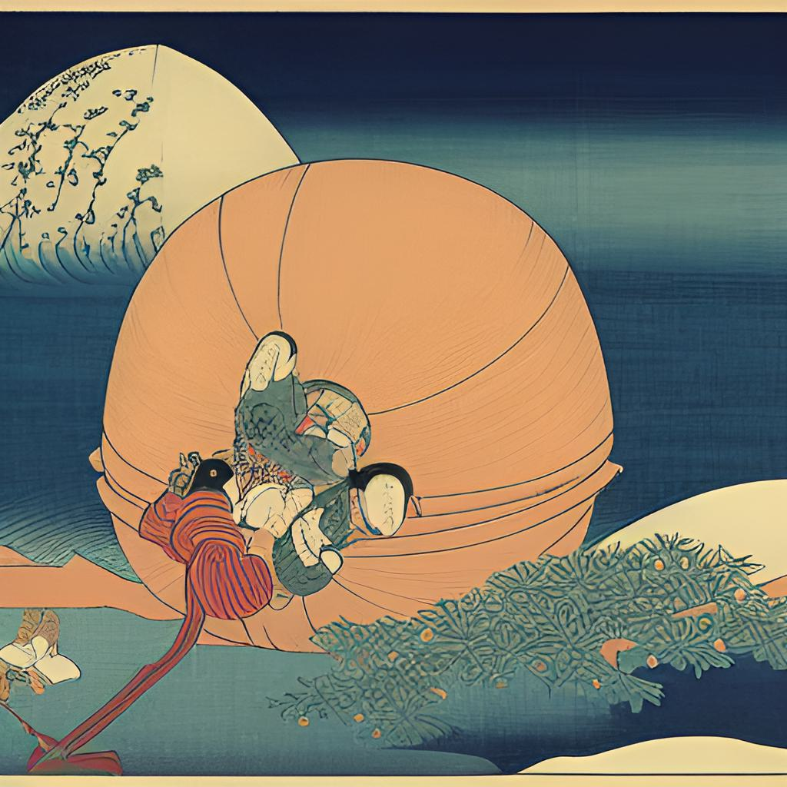
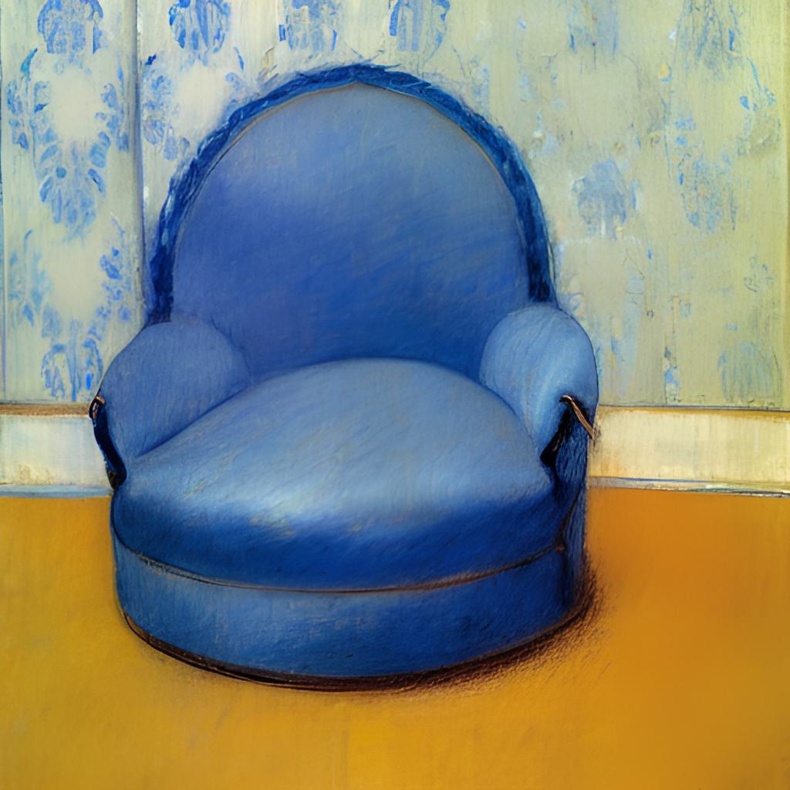
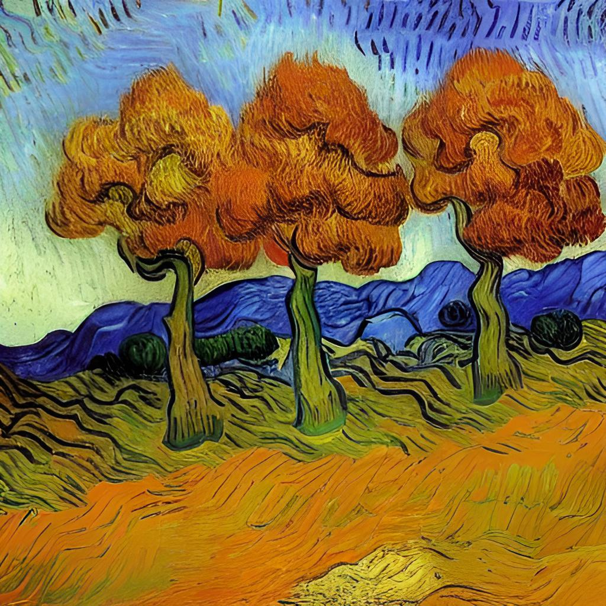
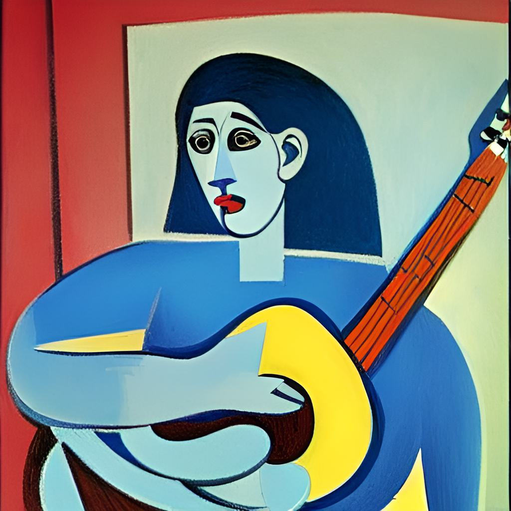
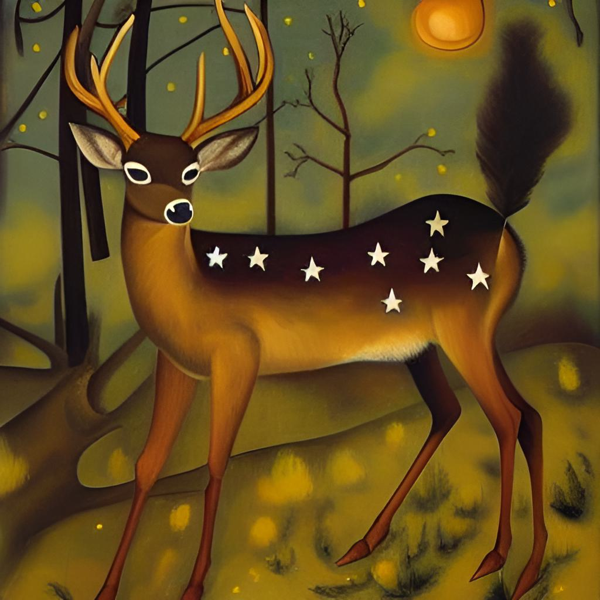
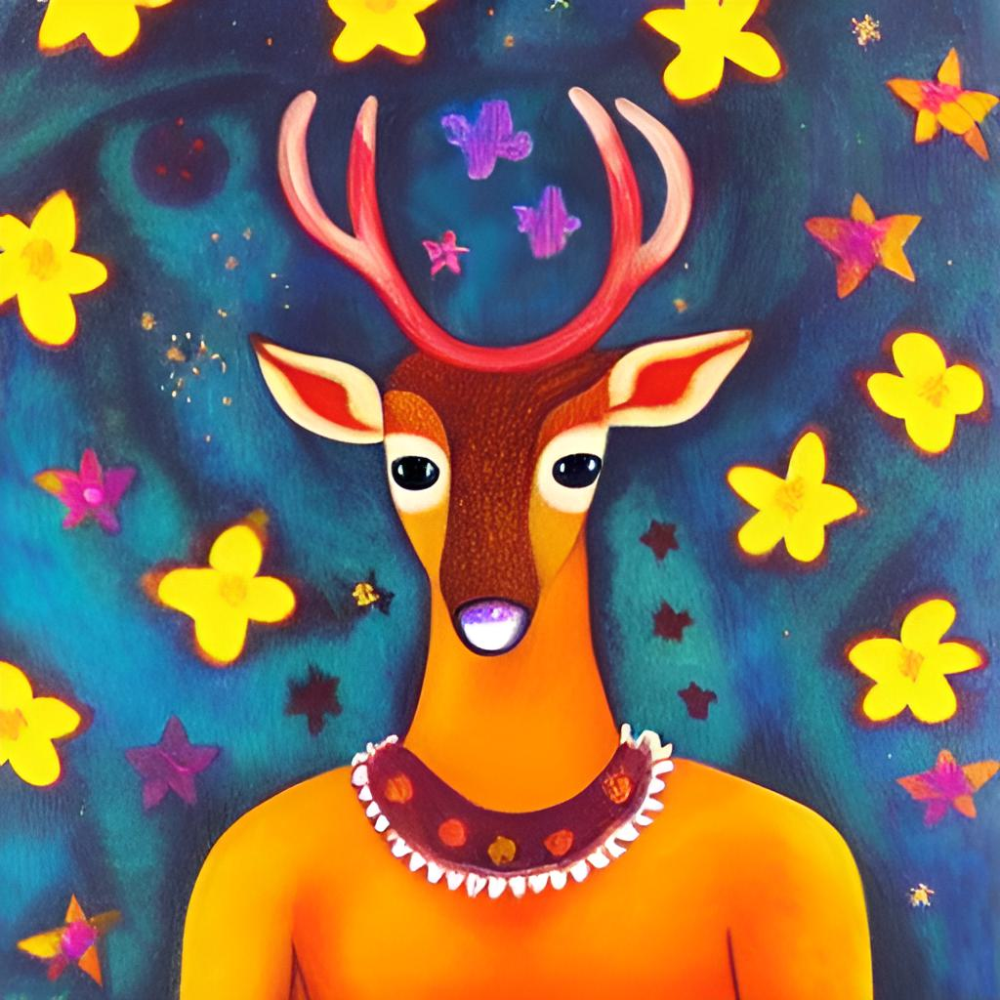

Solution: Artistic Interference
Answer: MUSEUM OF MODERN ART
Written by chimpaznee, empyreu, Enia, and quatrevingtneuf
In this puzzle, we are presented with some unusual works of art. We might notice some similarity between some of the images and famous paintings, but also notable difference. That's because the art has been generated by an AI. All works of art in this puzzle are based on famous paintings, but one word in each has been changed. To help us find out what's the original word and what's the new word, enumerations are provided for both.
There is also one additional number associated with each image, presumably used as an index. We'll use it to index into the original words (this is especially disambiguated by the index of 11 into "composition" in the fifth painting).
| Image | Artwork | Old word | New word | Number | Index |
|---|---|---|---|---|---|
| 1 | A Sunday Afternoon on the Island of La Grande Jatte | AFTERNOON | NIGHT | 2 | F |
| 2 | Self-Portrait with Thorn Necklace and Hummingbird | HUMMINGBIRD | HOUSES | 5 | I |
| 3 | Wanderer above the Sea of Fog | WANDERER | FARMHOUSE | 3 | N |
| 4 | Hand with Reflecting Sphere | HAND | TABLECLOTH | 4 | D |
| 5 | Composition with Red, Blue and Yellow | COMPOSITION | WINDOW | 11 | N |
| 6 | Girl with a Pearl Earring | EARRING | BRIDGE | 1 | E |
| 7 | Swans Reflecting Elephants | SWANS | WOMEN | 2 | W |
| 8 | Girl with Balloon | BALLOON | ROSES | 2 | A |
| 9 | Circles in a Circle | CIRCLE | DOOR | 3 | R |
| 10 | Three Studies of a Male's Back | THREE | TWO | 1 | T |
| 11 | Two Sisters (On the Terrace) | TWO | THREE | 2 | W |
| 12 | The Old Guitarist | OLD | GIRL | 1 | O |
| 13 | Little Girl in a Blue Armchair | GIRL | BALL | 4 | R |
| 14 | The Duck Pond | DUCK | SPRING | 4 | K |
| 15 | Campbell's Soup Cans | CANS | FACTORY | 4 | S |
Indexing gives the cluephrase "FIND NEW ARTWORKS".
We can now check out the 6 lines at the bottom of the puzzle page. There are 15 letter-number pairs and 15 changed words, which suggests fitting them in somehow. With the cluephrase suggesting artworks, we can try to find new paintings that have the words we found in their titles (each time replacing a letter-number pair with one of the post-change words). And we can indeed make 6 new paintings with the words:
FARMHOUSE WINDOW and DOOR
GIRL with BALL
HOUSES at NIGHT
The FACTORY and the BRIDGE
THREE WOMEN at the SPRING
TWO ROSES on a TABLECLOTH
We should also notice that the letters A-O are all unique and consecutive, which means we should use these to order the extract letters. The numbers will be used to index into the words. This gives the phrase LOCATION OF THESE.
The clue suggests looking up the location of the paintings (and that location will be the final answer to the puzzle). The six new paintings that we found are all located in the MUSEUM OF MODERN ART!
Author’s Notes
This was one of the last puzzles written, and it was strongly inspired by its answer. It was only a few days before our intended hunt announcement date, when we were still a feeder short. So quatrevingtneuf suggested the idea of creating an AI puzzle. We brainstormed this for a while until landing on the current idea, and then the four of us started working on it, including our very own AI-art aficionado Enia. We spent a few hours finding artworks and getting the AI to generate the images. It took a decent amount of effort (and memory) but it was fun.
The images were all made using Stable Diffusion img2img, except for the Composition with Red, Blue and Yellow, which was made using DALL·E 2.
Naturally, this has also resulted in a large amount of images that were rejected. Here is a small selection of them for your viewing pleasure:

The ball in a blue armchair that is so little that you cannot see it

Autumn Landscape with Three Trees (attempting to imitate the style of Van Gogh)

The Woman Guitarist (in the style of Picasso)

The (Five-Legged) Starry Deer #1

The Starry Deer #2 (more like "Sad Deer with a Starry Background")
